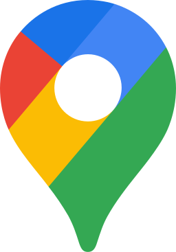
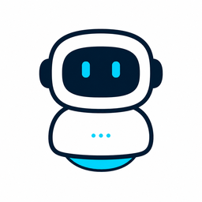
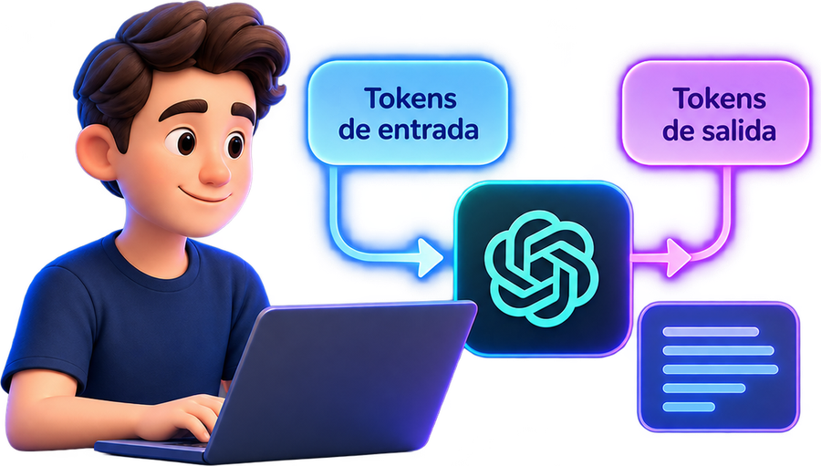
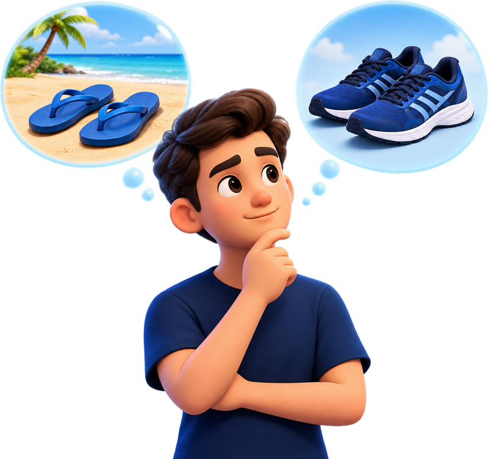
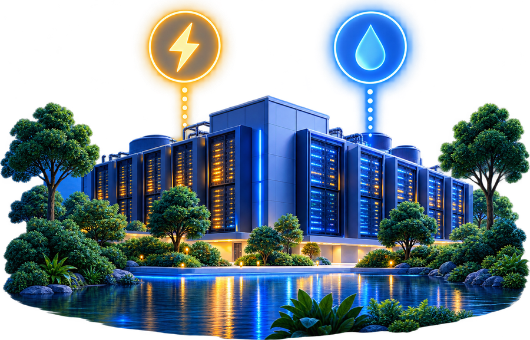

Inteligencia artificialpara la hotelería y la gastronomía
Qué es, cómo funciona y cómo aplicarla hoy en la gestión diaria de tu establecimiento: reseñas, WhatsApp, cartas, huéspedes, promociones y automatización.
¿Cuál es el objetivo de este encuentro?
Entender, aplicar y crear valor con inteligencia artificial en contextos reales.
Cómo se entrenan los modelos y qué significa automatizar
Qué hay adentro de un chat de IA, qué es realmente la automatización, y cómo las APIs y los chatbots mejoran la eficiencia, la productividad y la experiencia del cliente.
Ver ejemplo →Identificar oportunidades e implementar flujos
Aprender a detectar qué automatizar, implementar flujos de trabajo asistidos por IA y garantizar el cumplimiento de las normas de protección de datos.
Ver ejemplo →Mejorar la forma en la que trabajamos
La mejor meta que podemos trazarnos es crear valor y trabajar mejor. Y en el mejor de los casos, disponer de tiempo para otros placeres además del trabajo.
Ver ejemplo →Una jornada para ambos públicos + dos talleres prácticos
Primero los conceptos que todos necesitan. Después, cada grupo trabaja sobre sus propios procesos.
Módulo general: cómo funciona y cómo se usa la IA
Cinco bloques, veinte preguntas. De la historia y los conceptos base a la implementación, la medición y la ética.
- Encuadre e historia
- Arquitectura y conceptos base
- Técnicas de interacción y control
- Implementación, herramientas y procesos
- Gobernanza y ética
Velocidad de respuesta e interacción diaria
Un sector donde la velocidad de respuesta define la venta.
- Respuesta rápida a reseñas locales
- Redacción de propuestas para la carta
- Atención vía WhatsApp
- Contenido para eventos especiales y promociones del día
Experiencia del huésped y comunicación institucional
El eje está en la relación con el huésped antes, durante y después de la estadía.
- Automatización de correos pre y pos estadía
- Gestión de consultas sobre servicios del hotel
- Respuesta en Booking y TripAdvisor
- Propuestas para turismo corporativo y temporada baja
La visión de la comunicación + la ejecución técnica
María Eugenia Dicándilo
Abogada · Comunicadora · Cofundadora de Modo Comunicación y de KrovaLab Consultora
Referente en el desarrollo de planes de comunicación de posicionamiento para empresas e instituciones. En este ciclo aborda el encuadre estratégico, la confección de instrucciones efectivas y el uso responsable de la tecnología en la gestión institucional.
Pablo Pellizzoni
Diseñador industrial · CAIO de Grupo Developer · Docente investigador UNMdP · Cofundador de Outcomy, KrovaLab, Kexen y Kearte
Más de 15 años entre el diseño de producto, la fabricación de espacios y el liderazgo en inteligencia artificial. Durante dos años trabajó junto a Wyndham Hotels & Resorts en la integración de cinco hoteles de Kissimmee y Jacksonville (Florida) a una soft brand: servicios de desayuno, remodelación de habitaciones y la marca completa. También diseñó equipamiento médico (premio Missaglia/Desall 2017), y fue distinguido con el Sello Buen Diseño y el premio Innovar. Hoy lleva la IA a la operación diaria: herramientas a medida, automatización de procesos y sistemas que usan equipos reales.
Cinco bloques
Encuadre e historia
Qué es la IA, para qué sirve y cómo llegó hasta acá.
Arquitectura y conceptos base
Qué es un modelo, qué es un token, cómo funciona por dentro y qué es la IA generativa.
Interacción y control operativo
Cómo hablarle, por qué inventa y cómo se controla.
Implementación, herramientas y procesos
Usos, chatbots, automatización, funciones, medir y acompañar al equipo.
Gobernanza y ética
Sesgos, datos personales y regulación en la Argentina.
Encuadre e historia
- 01¿Qué es la inteligencia artificial y para qué sirve?
- 02¿Cómo evolucionó la inteligencia artificial a lo largo de su historia?
- 03El humano en el circuito (human in the loop)
¿Qué es la inteligencia artificial y para qué sirve?
Usa algoritmos y datos para predecir resultados y facilitar decisiones. No razona ni comprende: calcula la continuación más probable. Razonar es de los seres humanos.
Persona vs. máquina
Persona
- Consciencia e intención
- Experiencias de vida
- Busca lo raro y lo nuevo
- Decide y se hace cargo
Máquina
- Sistema matemático
- Datos preexistentes
- Tiende al promedio
- Propone, no decide
Para qué sirve · en un hotel o un restaurante
Documental
¿Cómo evolucionó la inteligencia artificial a lo largo de su historia?
Durante décadas avanzó por grandes hitos. En los últimos años, la mejora se aceleró y empezó a combinar capacidades.
Vas a ver qué aprendió la IA en cada etapa y qué modelo lo hizo posible.
IA invisible
Ya la usabas sin saberlo: recomendaciones, traducción automática, filtros de spam, mapas, reconocimiento de voz.

IA conversacional
Se vuelve una herramienta de trabajo: escribir, resumir, traducir, analizar, programar, generar imágenes.
IA que ejecuta
Agentes que completan procesos: leer un correo, consultar una planilla, redactar y enviar una respuesta, con supervisión humana.

Nuestro logo → lo dibujó GPT-6 Astra manejando Paint¿Para qué usan la IA los argentinos?
Cuántos la usan
de los adultos conectados relevados usa IA generativa para fines personales
Extrapolación del 45,5% a la población adulta de 2026.
uso personal
uso laboral
considera incorporarla
CEPE–Di Tella + Fundar · 1.589 adultos (18+) · panel online por cuotas · ago–sep 2025. Excluye personas sin internet.
INDEC 2026: ≈35,0 M adultos. *≈15,9 M: extrapolación ilustrativa, no conteo oficial. Indicadores con distintas bases; no se suman.
Herramientas más usadas Argentina · 1er semestre 2026
Visitantes únicos por mes desde computadoras · crecimiento vs. enero 2026. Fuente: Comscore, vía Infobae y La Nación (ago. 2026).
Qué les preocupa
Para qué la usan ¿adivinan el orden?
Entre quienes usan IA · respuesta múltiple. Fuente: Encuesta Nacional sobre Adopción de IA, CEPE–Di Tella + Fundar, ago–sep 2025.
El humano en el centro del algoritmo
La IA no reemplaza, extiende las posibilidades operativas del ser humano.
El primer resultado que arroja es el básico o esperable. El agregado de valor lo aporta el ser humano.
Human in the loop · el ciclo
- Define objetivos
- Formula instrucciones precisas
- Provee contexto y datos
- Procesa el contexto
- Genera variaciones probabilísticas
- Propone borradores
- Evalúa resultados
- Corrige y ajusta la instrucción
- Toma la decisión final
Human in the loop · tocá la rueda
sin intervenciónTocá la rueda: entra una persona al circuito (el flujo pasa por sus manos y vuelve). Tocá a la persona para sacarla. Tocá bien afuera: la rueda se corta y el flujo va de la primera persona a la última y termina en el cliente. Tocá al cliente para cerrarla de nuevo.
Arquitectura y conceptos base
- 04¿Qué son los modelos de inteligencia artificial?
- 05¿Cómo funciona la inteligencia artificial por dentro?
- 06¿Cuánto cuesta usar inteligencia artificial?
- 07¿Qué es la inteligencia artificial generativa?
¿Qué son los modelos de inteligencia artificial?
Un modelo es el resultado de entrenar una red con enormes volúmenes de datos: miles de millones de conexiones que capturan patrones. Cuatro fundamentos lo explican.
La unidad mínima
La IA no procesa ideas: procesa fragmentos de texto o símbolos.
La memoria operativa finita
Todo lo que queda fuera del límite de tokens asignado deja de existir para el sistema.
La escala del modelo
La cantidad de conexiones internas que capturan relaciones complejas en los datos de entrenamiento.
El núcleo ejecutor
Ante cada token posible, el modelo asigna una probabilidad y apuesta por el más estadísticamente adecuado.
La gravedad estadística castiga la innovación
- Privilegia los patrones más frecuentes.
- Evita de forma automática los extremos.
- Por defecto, la máquina siempre te llevará al centro.
El paisaje de datos: acceder a lo nuevo es computacionalmente costoso
Conceptos hiper-representados. La IA accede a ellos fácilmente porque el costo de procesamiento es bajo.
Ideas raras e inéditas. La máquina ignora estas zonas a menos que el operador la obligue a explorarlas.
"Menú del día" tiene miles de ejemplos; "menú de pasos con productos del puerto marplatense" tiene pocos. Si no lo pedís explícitamente, la IA te devuelve lo primero.
¿Cómo funciona la inteligencia artificial por dentro?
Los modelos piensan en relaciones matemáticas, no en palabras. El texto se parte en fragmentos (tokens) y cada fragmento se elige por su probabilidad.
Calculadora en vivo · ¿cuántos tokens gasta esto?
Referencia fija · Claude Max US$100 · ≈ 340.000 tokens por ventana de 5 h (estimado) · API ≈ US$5 por millón de tokens
¿Y cómo genera una imagen?
En texto predice qué sigue. En imagen parte de ruido y lo transforma paso a paso según lo que pedimos.
Misma lógica, otro medio
Texto: probabilidad sobre tokens
Imagen: reducción progresiva de ruido guiada por el prompt
La instrucción define qué queremos ver.
El modelo relaciona conceptos aprendidos.
La imagen empieza como ruido.
En cada paso elimina ruido y refina la escena.
Resultado generado, no una foto recuperada.
Qué ve el modelo en cada paso
No dibuja como una persona. Va encontrando una imagen coherente dentro del ruido.
Cada iteración acerca el resultado a lo que describe el prompt.
Responder es predecir: la IA elige qué palabra sigue
La IA no elige la respuesta correcta: elige la continuación más probable.
¿Podés pensar como una IA?
Las probabilidades aparecen cuando pruebes tu predicción.
Simulación didáctica de probabilidades. Valores ilustrativos para comprender cómo un modelo pondera posibles continuaciones.
Vos elegís por criterio. La IA elige por probabilidad.
¿Cuánto cuesta usar inteligencia artificial?
Se paga por tokens procesados: los que entran (tu instrucción + contexto) y los que salen (la respuesta). Un token es, en español, más o menos tres cuartos de una palabra. Saberlo sirve para elegir modelo y controlar el gasto.
Un fragmento de texto
"desayuno" ≈ 3 tokens. Una reseña ≈ 80. Una página ≈ 500. Una carta completa ≈ 1.500.
Entrada + salida
Todo lo que mandás (instrucción, adjuntos, historial) más todo lo que el modelo genera. Los modelos más capaces cuestan más por token.

El calzado correcto
No usás las mismas zapatillas para la playa que para correr. Un modelo liviano para lo cotidiano; uno de "razonamiento" para lo complejo. Elegir mal es la forma más común de gastar de más.

Uno rápido y baratopara lo repetitivoEl más capaz
para lo delicado
Energía y agua
Cada respuesta corre en centros de datos que consumen electricidad y agua. Más tokens y modelos más grandes = más consumo.

Orden de magnitud · lo barato y lo caro
| Tarea | Tokens aprox. | Costo relativo |
|---|---|---|
| Responder una reseña | ~300 | Centavos |
| Resumir 300 reseñas del mes | ~30.000 | Monedas |
| Chatbot de WhatsApp, 1.000 conversaciones | ~500.000 | Unos pocos dólares |
| Hora de una persona redactando | — | Lo verdaderamente caro |
Cómo se paga · reglas para no gastar de más
- Planes gratuitos con límites · suscripción mensual por usuario · API por consumo para automatizaciones.
- Elegir el modelo según la tarea: uno rápido y barato para lo repetitivo; el más capaz para lo delicado.
- No arrastrar conversaciones eternas: cada mensaje reenvía todo el historial.
- Adjuntar solo lo necesario; pedir respuestas cortas y precisas.
¿Qué es la inteligencia artificial generativa?
Crea nuevos contenidos (textos, imágenes, ideas) basándose en patrones de datos aprendidos. Estos sistemas no "piensan" como los humanos: predicen resultados usando relaciones matemáticas aprendidas de enormes conjuntos de datos.
Redacción y reescritura
Respuestas a reseñas, descripciones de platos y habitaciones, correos a huéspedes, propuestas comerciales, traducciones.
 C
C C
C G
G
Visuales para comunicar
Piezas para redes, bocetos de ambientación, variaciones de un flyer, mockups de la carta. Depende por completo del prompt.

Locución y transcripción
Transcribir notas de voz de WhatsApp, locuciones para videos, atención telefónica automatizada.

Clips cortos
Reels de un plato o una habitación, videos de temporada con subtítulos en varios idiomas.
 HSK
HSK
Pequeñas herramientas
Una planilla que calcula costos, un formulario de reservas, una página de evento, sin saber programar.
CC
Análisis e interpretación
Resumir 300 reseñas en cinco temas, detectar quejas repetidas, comparar ocupación por mes.
 NG
NG
Herramientas que hacen esto accesible a cualquiera
CGCMANNHHiggsfield · video, "tipo Netflix" multiplataforma para productores audiovisualesEl coste y el rendimiento varían entre modelos, y el uso suele medirse en tokens. Los usuarios debemos equilibrar creatividad con coste y responsabilidad.
Cómo "crea" sin entender
textos · imágenes · audios · ejemplos
relaciones · estructuras · estilos · probabilidades
“Respondé esta reseña con un tono cordial y profesional”
respuesta · imagen · audio · código · análisis
No copia. No busca una respuesta guardada. Construye una salida nueva a partir de patrones aprendidos.
Lo que cambia para un hotel o un restaurante
Producir en minutos lo que antes llevaba horas: borradores, variantes, traducciones.
Responder a tiempo: reseñas, consultas, cotizaciones, sin esperar "a tener un rato".
Mantener un tono consistente en todos los canales con una sola instrucción bien escrita.
Convertir datos sueltos (reseñas, planillas, mensajes) en decisiones.
Atención: genera contenido plausible, no necesariamente verdadero. Lo que produce se revisa antes de salir.
Técnicas de interacción y control operativo
- 08¿Cómo hablarle a la IA? Contexto, memoria y los cuatro pilares del prompting
- 09¿Qué son las alucinaciones y por qué la IA inventa datos?
- 10¿Por qué resulta necesario probar e inspeccionar las respuestas de la IA?
¿Cómo hablarle a la IA?
Un prompting efectivo es el que logra resultados de alta calidad. La IA generativa predice resultados matemáticos: para guiarla, requiere estructura. Cuatro pilares: especificidad, ejemplos, contexto y formato.
Los cuatro pilares del prompt perfecto
Qué querés exactamente, para quién y con qué objetivo.
Mostrale una o dos muestras de lo que te gusta.
Quiénes somos, qué pasó y qué datos importan.
Cómo querés la salida: largo, tono, idioma o lista.
Ejemplo real · responder una reseña
Sos el encargado de atención al cliente de una parrilla familiar de Mar del Plata. Un cliente dejó 2 estrellas en Google porque esperó 40 minutos la mesa un sábado a la noche y el mozo no le avisó la demora. La comida le gustó. Nuestro tono es cercano, sin exagerar disculpas.
Redactá una respuesta pública que agradezca, reconozca la demora sin excusas, explique una medida concreta (aviso de espera estimada) y lo invite a volver.
Ejemplo de respuesta que nos gusta: "Gracias por contarnos, Martín. Tenés razón con la espera del sábado: ya estamos avisando el tiempo estimado al llegar. Nos alegra que la comida haya valido la pena; te esperamos."
Máximo 4 líneas, español rioplatense, sin emojis, sin ofrecer descuentos.
Gracias por contarnos.
Tenés razón con la espera del sábado: vamos a reforzar el aviso del tiempo estimado al llegar.
Nos alegra que la comida haya sido de tu agrado.
¡Te esperamos pronto!
Contexto y memoria
Memoria: el modelo solo "recuerda" lo que entra en la ventana de contexto de esa conversación. Lo que no está escrito, no existe.
¿Qué son las alucinaciones y por qué la IA inventa datos?
Son salidas falsas presentadas como hechos o conclusiones, que pueden erosionar la confianza y causar daños en el mundo real. No es un error ocasional: es una propiedad estructural del mecanismo.
La alucinación como propiedad estructural
1Datos insuficientes
- Check-in
- Restaurante
- Política de cancelación
- Teléfono
- …
Información insuficiente, ambigua o inexistente en los datos
2El modelo completa según patrones
El modelo sigue el patrón aprendido: "después de esto, suele venir aquello"
3Respuesta aparentemente correcta
Respuesta fluida, segura, coherente… y falsa
Alucina porque su trabajo es completar con lo más probable, incluso cuando no tiene base suficiente.
El modelo no sabe que no sabe. No tiene un "no estoy seguro" nativo: produce la continuación más probable, aunque sea inventada.inventa datos.En imagen,
inventa rasgos.
Cómo se ve en un hotel o un restaurante
- Inventa horarios de check-in o de cocina que no son los tuyos.
- Describe un plato que no está en la carta o un servicio que el hotel no ofrece.
- Confirma una política de cancelación que nunca definiste.
- Cita precios, direcciones o teléfonos "plausibles" pero incorrectos.
Cómo reducirlas (no se eliminan)
- Prompts y descripciones asertivos: darle los datos (carta, tarifas, políticas) y pedir que diga "no tengo ese dato".
- Bajar la temperatura en tareas de datos; subirla solo para ideas.
- Pedir fuentes y verificarlas; activar búsqueda web cuando el dato es externo.
- Someter los resultados al control humano antes de publicar.
¿Por qué resulta necesario probar e inspeccionar las respuestas de la IA?
Si la IA puede producir respuestas plausibles pero falsas, entonces no alcanza con pedir bien: hay que probar, inspeccionar y corregir.
No alcanza con pedir bien: hay que probar, inspeccionar y corregir.
Comparar con resultados conocidos
Dale 10 reseñas que ya respondiste y mirá cuánto se parece a lo que hubieras escrito.
Simular recorridos reales de usuario
El cliente apurado, el que escribe mal, el que pregunta algo que no está en la carta.
Detectar pronto y documentar
Probar no es evitar errores por completo, sino detectarlos pronto y documentar las correcciones. Protege la reputación y la seguridad del cliente.
La IA puede producir respuestas. Pero diseñar la experiencia, supervisar el resultado y responder por él sigue siendo humano.
El antídoto contra la mediocridad automatizada
¿Por qué siempre te da la razón?
Los modelos se ajustan para resultar agradables y útiles: tienden a validar lo que decís y a elogiar tus ideas. Eso no es evidencia de que tengas razón.
- Pedile que te contradiga: "buscá tres problemas de esta propuesta".
- No le cuentes qué respuesta esperás antes de preguntar.
- Pedí fuentes y verificá al menos una.
Antes de publicar · lista de inspección
- ¿Los datos (precios, horarios, políticas, nombres) son reales y actuales?
- ¿El tono es el nuestro o suena a plantilla?
- ¿Promete algo que no podemos cumplir?
- ¿Incluye datos personales de un cliente o un huésped?
- ¿Lo firmaría con mi nombre?
Iluminar nuevas torres
La máquina no explorará lo raro sola; la persona debe forzar la conexión: "proponé algo que ningún hotel de la zona haga".
Inyectar vivencias
Cruzar lo que sabés del barrio, de tus clientes y de tu cocina altera drásticamente la probabilidad del resultado.
El verdadero problema
El riesgo no es la herramienta en sí, sino operarla sin criterio humano activo.
Implementación, herramientas y procesos
- 11¿De qué formas concretas se puede usar la inteligencia artificial?
- 12¿Qué son los chatbots y para qué sirven?
- 13¿Qué diferencias hay entre usar chats, agentes, plataformas de bajo código y apps integradas?
- 14¿Cómo automatizar tareas repetitivas? · Anatomía de un flujo de automatización
- 15¿Qué aplicaciones son hoy las más usadas y para qué? · ¿Qué modelo conviene? · ¿Y qué significa vibe coding?
- 16¿Cómo medir el impacto real en los tiempos y la calidad del trabajo?
- 17¿Cómo acompañar al equipo para superar la resistencia al cambio? · Lo que viene
¿De qué formas concretas se puede usar la inteligencia artificial?
Comparativa de productividad: el mismo día de trabajo, con y sin IA.
Reseñas, redes, correos
Lo más inmediato: se empieza acá y se ve el resultado el mismo día.
WhatsApp, web, teléfono
Chatbots y asistentes que responden lo frecuente y derivan lo delicado.
Planillas, reportes, compras
Análisis de ocupación, costos de carta, pedidos a proveedores, resúmenes semanales.
Contenido y propuestas
Promociones, eventos, propuestas corporativas, piezas visuales, video corto.
Una carta de productos, ahora: la IA propone, la sala corrige
Vuelta 1: lo que la máquina cree que querés, lo mediocre de todos. Vuelta 2, 3, 4: cada corrección de una persona la mueve hacia lo que nadie más pediría. La decisión final es siempre humana.
Entrada · Proceso A → Proceso A + human in the loop
Se genera acá mismo con Gemini (unos 15 segundos), con el logo adjunto. Después cambiá lo que quieras y tocá "Mejorá la opción": sigue sobre esa misma carta. Plan B si falla: · y pegar la carta a la derecha.
Carta · opción –
tocá la carta o una miniatura para verla grande
¿Qué son los chatbots y para qué sirven?
Herramientas digitales que simulan conversaciones para gestionar interacciones rutinarias de forma eficiente. Identifican la intención del usuario y lo guían a través de respuestas lógicas o pasos de recogida de datos.
Menús y opciones preestablecidas
"Escribí 1 para reservas, 2 para horarios". Predecible, barato, limitado. No entiende texto libre.
Interpreta lenguaje natural
Entiende la pregunta aunque esté mal escrita y responde con tus datos. Necesita contexto, límites y revisión.
Lo mejor de los dos
Flujos fijos para lo crítico (reservas, pagos) y lenguaje natural para consultas. Es el estándar recomendable.
Deconstruyendo la IA conversacional · intención y datos
Los bots avanzados diseccionan el lenguaje natural en componentes técnicos para ejecutar acciones. Cada funcionalidad es un intent; cada dato (fecha, hora, personas) es un slot.
Cómo se arma uno · ejemplo con Amazon Lex
- Crear el bot: nombre, idioma, canal (WhatsApp, web).
- Definir los intents: "Reservar mesa", con expresiones de ejemplo: "quiero una mesa", "tienen lugar para el sábado".
- Definir los slots: fecha, hora, personas. El bot pregunta lo que falta hasta completarlos.
- Respuestas y acciones: confirmación de la mesa y, combinado con una API, la acción real: cargar la reserva, actualizar el registro.
Escribile ahora: un chatbot de WhatsApp armado en dos cajas
Personalidad y contexto + instrucciones. Nada más. Cambiamos cualquiera de las dos y el bot cambia al instante.
Configuración en vivo
programa cerradonúmero del día
Gemini · consultando…
Mensajes de la sala · en tiempo real
¿Qué diferencias hay entre usar chats, agentes, plataformas de bajo código y apps integradas?
La curva de aceleración operativa: cuatro niveles, de la conversación aislada al proceso que se ejecuta solo. Lo que los une son las APIs: mensajeros digitales que permiten que distintas aplicaciones se comuniquen.
ChatGPT, Claude, Gemini. Interacción conversacional, tareas aisladas. Cada vez se empieza de cero.
Proyectos, GPTs propios, asistentes con instrucciones fijas, documentos cargados y herramientas (web, archivos, calendario).
Make, Zapier, n8n: "cuando llega una reseña → redactá → mandame la aprobación → publicá". Sin programar.
Dentro del PMS, del sistema de reservas, del WhatsApp Business o de una app propia. Procesos completos con supervisión.
De la generación a la acción: el cambio de rol
Operador
La persona interactúa paso a paso con un chatbot. La generación de contenido es el fin último del proceso.
Director
La persona supervisa a un sistema que interactúa con aplicaciones y resuelve procesos completos sin intervención manual.
Matriz de diagnóstico · de la generación a la acción
| Dimensión | IA generativa (chat) | IA agéntica |
|---|---|---|
| Resultado | Textos, imágenes o código aislados | Procesos completos ejecutados |
| Rol del usuario | Editor (human in the loop) | Director y auditor (otorga permisos) |
| Interacción | Instrucciones paso a paso (especificidad, ejemplos, contexto, formato) | Delegación por meta final |
| Acceso | Copiar y pegar | Usa las aplicaciones y los datos del negocio |
¿Cómo automatizar tareas repetitivas?
La automatización permite a los sistemas completar tareas repetitivas con una intervención humana mínima. Ahorra tiempo eliminando la repetición manual, pero solo es valiosa cuando el tiempo y el coste ahorrados superan la inversión en configuración y operación.
Matriz de decisión · ¿cuándo es rentable automatizar?
Alto tiempo, baja frecuencia. Ej.: la propuesta corporativa de cada temporada.
Alto tiempo, alta frecuencia. Ej.: responder reseñas, confirmar reservas, correos pre-estadía.
Bajo tiempo, baja frecuencia. Ej.: el saludo de fin de año a los proveedores.
Bajo tiempo, alta frecuencia. Ej.: contestar "¿tienen estacionamiento?" por WhatsApp.
Cinco factores para detectar qué automatizar
- 1
Tiempo manual: cuánto tarda hacerla a mano, cada vez.
- 2
Frecuencia: cuántas veces por día, semana o mes se repite.
- 3
Momento: ¿cuándo habría que automatizarla? Antes de la temporada, no en plena temporada.
- 4
Tiempo de montaje: cuánto lleva configurarla y probarla hasta que funcione sola.
- 5
Coste operativo: suscripciones, tokens, mantenimiento y el tiempo de revisar lo que produce.
¿Es lo mismo? API, webhook y MCP
Confundirlos = elegir mal al automatizar.
API = pedir
Tu app le pregunta a otro sistema cuando necesita un dato, y el otro le responde.
Ej.: tu web le consulta al sistema de reservas si hay lugar el sábado.
reservastu web✓Webhook = te avisan
El otro sistema te avisa solo, apenas pasa algo. Tu app no tiene que preguntar a cada rato.
Ej.: el sistema de reservas avisa en el momento en que entra una reserva nueva.
reservastu-app.com/avisoRecibido ✓MCP = la IA actúa
Model Context Protocol
La forma estándar de conectar una IA con tus herramientas: calendario, correo, planillas, sistemas.
Ej.: «agendá la cata del viernes y avisale al equipo», y la IA lo hace sola.
crear_evento()✓enviar_correo()✓buscar_datos()✓La regla · ¿cuál va con cuál?
Tocá una pregunta y después su respuesta.¿Qué aplicaciones son hoy las más usadas y para qué?
Casi todas hacen casi todo. La diferencia está en dónde viven tus datos, qué hacen mejor y con qué ya trabajás.
¿Qué modelo conviene?
Cada aplicación tiene varios modelos: uno rápido, uno equilibrado y uno potente. Elegir bien ahorra tiempo y límite de uso.
La regla: empezá por el del medio. Subí cuando la respuesta no alcanza; bajá cuando la tarea es simple y se repite.
«Pensar más» (razonamiento): mejor respuesta, pero más lenta y gasta más del límite.
Nombres a octubre de 2026: cambian cada pocos meses; la lógica rápido · equilibrado · potente se mantiene.
¿Y qué significa vibe coding?
Describir con palabras lo que querés y dejar que la IA escriba el código. Vos dirigís, probás y corregís; la IA arma las piezas. Estas son las piezas, contadas como un restaurante.
Hecho así: esta charla · la carta digital de un restaurante · un flyer · la web de un hotel.
Lienzos de creación vs. motores de análisis
Canvas · para construir
Transforma un espacio en blanco en un aliado para la escritura, la programación y la colaboración en tiempo real. Cambia el formato de pregunta-respuesta por uno de creación-edición en un mismo espacio: seleccionás lo que querés cambiar y lo cambia.
- Escribir, programar y diseñar en vivo con edición selectiva.
- Convertir un texto plano en otros activos: presentaciones, infografías, prototipos de apps.
- Armar un plan de negocios y, desde ahí, estructurar una presentación que se edita con instrucciones.
- Crear código: un ta-te-ti o un juego interactivo tipo "elegí tu propia aventura".
NotebookLM · para dialogar
Especializado en "dialogar" con tus propias fuentes (PDF, videos, libros): extrae información específica de materiales extensos y solo responde con lo que le diste.
- Genera resúmenes, podcasts, videos y mapas mentales a partir de tus documentos.
- Pedirle diseño visual para entender mejor: diagramas, infografías, animaciones.
- Hotel: cargar el manual de procedimientos y las políticas, y que el equipo le pregunte.
- Restaurante: cargar la carta, las fichas técnicas y los alérgenos, y consultar al instante.
¿Cómo medir el impacto real de la IA en los tiempos y la calidad del trabajo?
Sin un "antes" no hay impacto: se mide una tarea concreta, dos semanas sin IA y dos semanas con IA.
Responder una reseña, redactar un correo, armar la promo del día.
Reseñas respondidas sobre el total; mensajes contestados en menos de 1 hora.
Borradores aprobados sin cambios; reclamos resueltos en el primer contacto.
Horas ahorradas por mes vs. costo de suscripciones y herramientas.
Método · cuatro semanas
| Semana | Qué se hace | Qué se anota |
|---|---|---|
| 1 – 2 | La tarea como siempre | Minutos por tarea, cantidad hecha, cantidad pendiente |
| 3 – 4 | La misma tarea con IA + revisión | Lo mismo + cuántos borradores se corrigieron |
| 5 | Comparar y decidir | Seguir, ajustar la instrucción o descartar |
Señales de que funciona (y de que no)
- El equipo la usa sin que se lo pidan.
- Baja el tiempo de respuesta al cliente y suben las reseñas respondidas.
- Se corrige más de lo que se ahorra: la instrucción está mal armada.
- Se publican errores: falta la revisión humana, no sobra IA.
¿Cómo acompañar al equipo para superar la resistencia al cambio?
La resistencia no es a la tecnología: es al miedo de ser reemplazado y a la sensación de no saber. Las dos se trabajan con lo mismo: una tarea concreta que les saque un peso de encima.
Empezar por la tarea odiada
No "vamos a usar IA", sino "vamos a dejar de escribir el mismo correo 30 veces por día". Automatizar lo tedioso para potenciar, no para reemplazar.
Mostrar antes y después
Una reseña respondida en 40 segundos frente a 10 minutos. Lo visible convence más que la explicación.
Reglas claras: qué sí, qué no
Qué datos se pueden cargar, qué sale con revisión y qué nunca se automatiza. Una página, a la vista.
Un referente por turno
Alguien del equipo que la usa bien y ayuda a los demás. No el dueño: un par.
Capacitación corta y práctica
Una hora, con los casos del propio establecimiento, no con ejemplos genéricos.
Reconocer el tiempo ganado
Decir en voz alta qué se dejó de hacer a mano y en qué se usó ese tiempo.
Lo que viene: la IA que ve, escucha, habla y trabaja sola
Septiembre de 2026 fue un mes enorme. Los modelos ya no solo responden: miran, hablan y hacen el trabajo por su cuenta.
GPT-6 Astra
Trabaja adentro de los programas. En la presentación dio formato a un contrato, armó un juego en 3D y reservó una cancha de tenis, todo mientras hacía otras tareas.
Dots
Agentes que siguen trabajando aunque cierres el chat. Cada uno tiene su propia computadora y navegador en la nube y se conecta a más de 4.000 apps. Les das un objetivo y avanzan solos. Funcionan con GPT-6 Astra.
Muse
Un agente personal multimodal con cara, cuerpo y voz: un avatar en tiempo real. Maneja apps de la computadora con permiso, llega a los anteojos de Meta y en diciembre sale Muse Charm, un llavero para hablarle.
Claude Fable 5.1
Anthropic lo presenta como su modelo más avanzado para programar, investigar y trabajar con documentos. En tareas de investigación científica, más que duplica a la versión anterior.
Gobernanza y ética
- 18¿Cuáles son los sesgos y cómo garantizar un uso responsable de la IA?
- 19¿Cómo cuidar los datos personales y evitar fugas de información confidencial en la empresa?
- 20¿Qué regulaciones y protocolos existen hoy sobre inteligencia artificial en la Argentina? · El debate abierto: vigilancia estatal
¿Cuáles son los sesgos y cómo garantizar un uso responsable de la IA?
El modelo aprendió de datos producidos por personas: hereda sus desigualdades, estereotipos y puntos ciegos, y los reproduce con total naturalidad. Tres pilares para no perder de vista.
Ética y privacidad de los datos
La protección de la información es la prioridad número uno. Como la IA se nutre de datos, su uso debe ser riguroso, transparente y siempre bajo marcos éticos.
Mitigación de sesgos
Las IA pueden reflejar prejuicios presentes en sus datos de entrenamiento. El compromiso es buscar objetividad y justicia algorítmica para evitar discriminaciones.
Evolución del trabajo
La IA no busca reemplazar al ser humano, sino potenciar sus capacidades: automatizar lo tedioso para que las personas se centren en la creatividad y el valor humano.
De los datos de entrenamiento
Lo más frecuente en internet se vuelve "lo normal" para el modelo. Lo poco representado se invisibiliza o se caricaturiza.
Pequeños y constantes
Tono distinto según el nombre del cliente · sugerencias de menú que asumen cultura o religión · descripciones que estereotipan al "turista".
Decisiones sobre personas
Selección de personal, precios distintos por perfil, admisión de huéspedes, evaluación de empleados. Ahí la IA asiste; nunca decide.
Los pilares de la innovación inclusiva
Para desarrollar una IA responsable, la innovación debe ser inclusiva: hace falta un diálogo abierto entre la sociedad, las empresas y las instituciones que establezca "las reglas del juego".
Uso responsable · reglas de la casa
- Instrucciones explícitas: "tratá a todos los clientes con el mismo tono, sin suposiciones sobre su origen".
- Revisión humana de todo lo que se publica o se envía a un cliente.
- Transparencia: decir que un asistente es automático; no simular personas.
- Probar con casos variados (nombres, idiomas, edades) antes de automatizar.
- Un responsable interno del uso de IA, aunque sea el dueño.
Ejercicio rápido
Un sesgo detectado en la prueba es barato. Un sesgo detectado por un cliente en una reseña, no.
¿Cómo cuidar los datos personales y evitar fugas de información confidencial?
La protección de datos es un mandato innegociable. Hoteles y restaurantes manejan datos sensibles todos los días: documentos, tarjetas, alergias, fechas de viaje. Lo que se pega en un chat puede salir de la empresa.
Lo que exige la Ley 25.326 de Protección de Datos Personales
- Obtener consentimiento explícito del cliente para recopilar y usar sus datos (el correo de la reseña, el teléfono del WhatsApp).
- Garantizar la exactitud de los datos recopilados y usarlos solo para la finalidad informada.
- Otorgar el derecho de acceso, rectificación y eliminación: si un cliente pide que lo borres, se borra.
El cumplimiento implica un procesamiento legal de los datos, un seguimiento transparente del consentimiento y un almacenamiento seguro. Autoridad de aplicación: AAIP. (En Europa, el equivalente es el RGPD.)
¿Tus datos entrenan a la IA?
Con las APIs y los planes de empresa (Team / Business / Enterprise) de OpenAI, Anthropic y Google, tus datos no se usan para entrenar los modelos. En las cuentas personales (gratis o pagas), revisá la configuración de privacidad: en varias el uso para entrenamiento viene activado y hay que apagarlo.
Qué se carga, qué se anonimiza, qué nunca
Nunca se carga en una IA de uso general
- Números de documento, pasaporte o tarjeta de huéspedes y clientes.
- Listados completos de clientes con teléfonos y correos.
- Datos de salud (alergias, condiciones) asociados a un nombre.
- Contraseñas, accesos a sistemas, datos bancarios del negocio.
Cómo trabajar igual, sin exponer
- Anonimizar: "el huésped de la 204" en lugar del nombre; "cliente A" en las planillas.
- Usar cuentas de empresa con el entrenamiento sobre tus datos desactivado.
- Una política interna de una página: quién usa qué herramienta, con qué datos, para qué.
- Accesos personales, no compartidos; cerrar cuentas de quien se va.
Carta, tarifas públicas, políticas, descripciones de servicios, reseñas públicas, textos propios.
Mensajes de clientes, reclamos, planillas de ventas y ocupación, correos internos.
Documentos, tarjetas, datos de salud, contraseñas, datos de empleados, bases completas de clientes.
¿Qué regulaciones y protocolos existen hoy sobre inteligencia artificial en la Argentina?
No hay todavía una ley específica de IA. Lo que rige hoy es la protección de datos personales, las recomendaciones del Estado y las normas sectoriales de siempre (defensa del consumidor, lealtad comercial).
Ley 25.326 de Protección de Datos Personales
Consentimiento, finalidad, seguridad y confidencialidad de los datos de clientes y huéspedes. Autoridad: AAIP. Hay proyectos de reforma en el Congreso.
Recomendaciones para una IA fiable
Lineamientos del Estado nacional (2023) para el uso responsable de IA en el sector público: transparencia, supervisión humana, no discriminación. Guía también para privados.
Programa y guía de la AAIP para una IA responsable
Transparencia y protección de datos en el uso de IA: informar a las personas y cuidar sus datos.
Proyectos de ley de IA
Varias iniciativas en el Congreso con enfoques por nivel de riesgo, inspiradas en la regulación europea. Ninguna sancionada a octubre de 2026.
Reglamento de IA de la Unión Europea (2024)
Clasifica usos por riesgo y exige transparencia en chatbots: avisar que se habla con una máquina.
Consumidor y lealtad comercial
Lo que publica tu chatbot te obliga: precios, promociones y condiciones informadas por un asistente automático son oferta vinculante.
¿Se está construyendo un estado de espionaje en Argentina?
Informe de Democracia en Red y ODIA (Observatorio de Derecho Informático Argentino). Hoy, sin que hayas cometido ningún delito, sin orden judicial y sin que lo sepas, el Estado puede monitorear tus redes, cruzar tus datos con bases del gobierno y construir un perfil sobre vos.
Ciberpatrullaje en fuentes digitales abiertas
Habilita el monitoreo automatizado de redes sociales y sitios públicos para "prevención del delito", sin orden judicial previa.
Unidad de Inteligencia Artificial Aplicada a la Seguridad
Puede analizar grandes volúmenes de datos en tiempo real, cruzarlos y "predecir comportamientos". Según el informe, en 2025 decretos extendieron estas competencias a Gendarmería, Servicio Penitenciario y Policía Aeroportuaria.
La mecánica oculta del perfilamiento ciudadano
Publicaciones, ubicaciones, documentos, interacciones en redes
Con bases de datos del gobierno, en tiempo real
Se construye sin que sepas que existe, qué contiene ni qué decisiones genera
Sin debate parlamentario, sin evaluación de impacto y sin mecanismos para saber qué se recopila, quién lo ve o cuánto tiempo se guarda. Una vez construido, un perfil quizás no se puede deshacer.
La tecnología no es el enemigo. El uso sin controles, sí.
El algoritmo no distingue · ¿quién está en la mira?
La vigilancia expone asimétricamente a quienes dependen de la confidencialidad. El daño puede ser irreversible.
La diferencia está en qué se puede hacer, quién lo controla y qué garantías existen
No se trata de estar en contra de la tecnología ni de que el Estado la use para prevenir delitos graves. Sí de atender cuando esas herramientas se usan sin transparencia, sin controles, sin evaluación de impacto y sin proteger los derechos de las personas.
- El ABC de la Vigilancia Estatal: qué es, cómo funciona el ciberpatrullaje, qué implica el perfilamiento.
- Vigilancia Digital Estatal en Argentina: ¿qué pasó y qué dicen las nuevas normas?
- Informe completo: ¿Se está construyendo un estado de espionaje en Argentina? (Democracia en Red + ODIA).
Velocidad de respuesta e interacción diaria
Un sector donde la velocidad de respuesta e interacción diaria define la venta. Cuatro estaciones de trabajo con casos propios de cada participante.
Respuesta rápida a reseñas locales
- Google, TripAdvisor, Instagram
- Instrucción fija con el tono del local
- Reseñas negativas: reconocer, resolver, invitar
- Automatizar las de 4 y 5 estrellas
Propuestas para la carta
- Nombres y descripciones de platos
- Variantes por temporada y por público
- Traducción a inglés y portugués
- Costeo y precio sugerido desde la planilla
Atención vía WhatsApp
- Respuestas a preguntas frecuentes
- Reservas y grupos: qué automatizar y qué no
- Asistente híbrido con derivación
- Transcripción de audios
Eventos especiales y promos del día
- Promo del día en 3 formatos (historia, posteo, WhatsApp)
- Calendario de fechas especiales
- Propuesta para eventos privados
- Piezas visuales rápidas
Experiencia del huésped y comunicación institucional
El eje está en la relación con el huésped antes, durante y después de la estadía, y en la voz institucional del hotel.
Correos pre y pos estadía
- Secuencia: confirmación → pre-llegada → bienvenida → despedida → pedido de reseña
- Personalización por tipo de huésped
- Multilingüe automático
- Disparadores desde el sistema de reservas
Consultas sobre servicios del hotel
- Base de conocimiento: servicios, horarios, políticas
- Asistente del hotel con tono propio
- Qué deriva a recepción
- Pruebas con casos reales
Booking y TripAdvisor
- Respuesta a mensajes pre-llegada
- Respuesta pública a reseñas
- Detección de temas repetidos en las reseñas
- Informe mensual automático
Turismo corporativo y temporada baja
- Propuesta para empresas y eventos
- Paquetes de temporada baja
- Piezas para agencias y redes
- Seguimiento de propuestas enviadas
Gracias.
¿Preguntas?